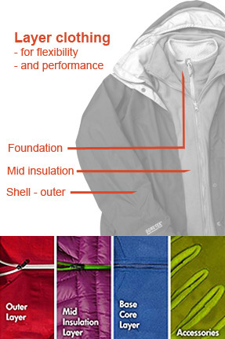

Preston Idaho
Weather Summary
Currently: Partly Cloudy
High: 48°F
Wind Chill: °F
Humidity: 51%
Wind Speed: 9 mph
5 Day Forecast
Use layers to stay warm
To enjoy your favourite activities without fear of getting too cold or too hot, layering is the way to go! Layering is a system of clothing items that you can put on, or take off, depending on your level of activity, to help regulate body temperature. The layering system includes: a base layer, a mid layer, and a good outer layer that are more effective and versatile than one big winter jacket and snowpants. You can either layer and enhance your different layers if the cold gets too intense, or remove it one by one if you get too hot. Layering is also useful in all types of weather. No need to buy a new jacket with each change of season. For example, fall afternoons are relatively warm while evenings are cooler. It’s easier to start the day wearing layers and remove them as your body warms up than to do the opposite. And this rule applies just as much in the fall as it does in the winter or spring. As layering clothes will help you regulate your body temperature, depending on the intensity of the activity you want to do, a high-intensity activity where you’re likely to sweat a lot, such as trail running, will require fewer layers of clothing than if you’re standing still by a campfire.
How to layer:
To understand layering your clothing for outdoor activities, you need to know the function of each layer:
Base layer (underwear layer): The base layer is the foundation for your layering system. The base layers’ main responsibility is wicking moisture away from your skin which helps regulate temperature and keep you comfortable. Generally made from merino wool or fleece, your base layer should be quick-drying, absorb humidity, and be able to wick moisture. Your underwear is a base layer, too. Don’t underestimate it, because it also factors into the equation. So, pay attention to what you’re wearing underneath your clothes.
Middle layer (insulating layer): The warmth you get from your base layer is not enough in colder temperatures. To trap body heat even more effectively, layering clothes with a middle layer is a must. The insulating layer is one you will find being put on and taken off the most frequently of all layering pieces. Made of synthetic fibre and down, this layer will keep you warmer when the temperature drops.
Outer layer (shell layer): When layering clothes, the role of the outer layer, also known as the hard shell, is to protect you from the elements, keeping you dry from precipitation, and blocking the wind. It must be lightweight, compressible, breathable and wear-resistant for long-term protection. Its internal seams must also be sealed to prevent water from seeping in.
Even if you don’t wear all three layers at the outset, it’s a good idea to take all layers on every outing because you can peel off layers if things heat up, but you can’t put on layers that you didn’t bring along.